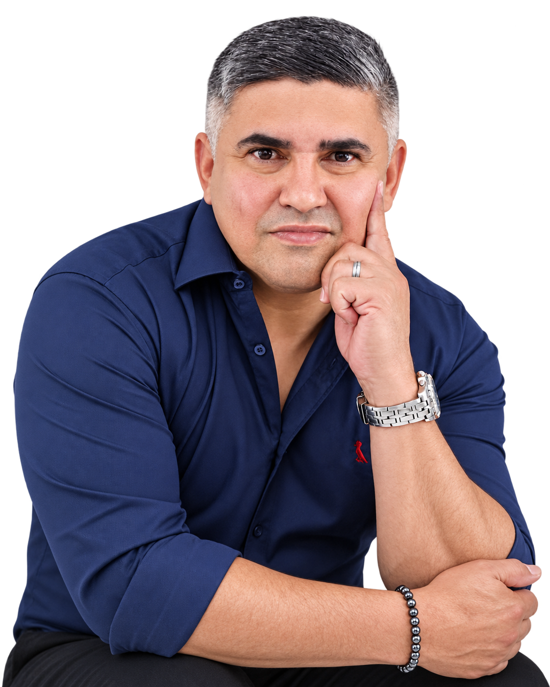
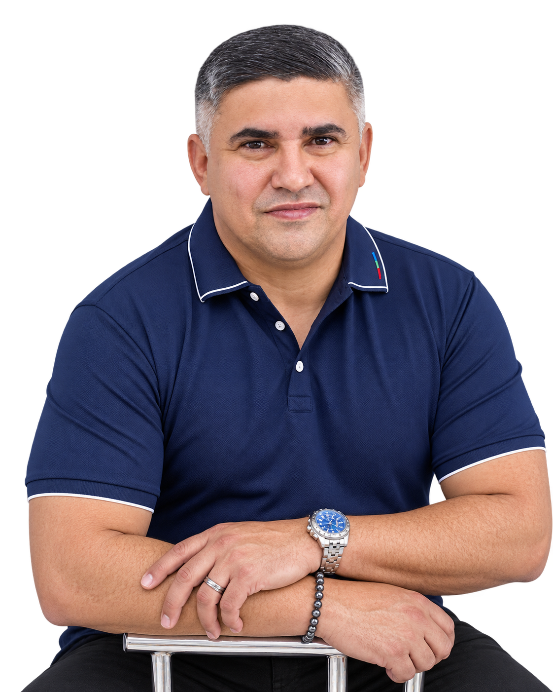

01
Segurança com experiência
Atuação ligada à segurança preventiva, presença comunitária e proteção de famílias, mulheres, escolas e comerciantes.
Segurança, raízes e compromisso com o povo. Cabo Telmo apresenta uma trajetória ligada à segurança pública, à defesa da família, à valorização das raízes nordestinas e ao compromisso com Diadema.

Conteúdo institucional estruturado com foco em identidade, experiência e compromisso público.
Cabo Telmo é nordestino, policial militar há mais de 20 anos, pai de família e morador de Diadema. Sua trajetória representa o esforço das famílias trabalhadoras que ajudaram a construir a cidade.
Seu posicionamento reúne experiência em segurança pública, valorização da família, orgulho das raízes nordestinas e compromisso com o desenvolvimento local.

Os eixos abaixo traduzem a mensagem institucional da candidatura em linguagem objetiva.
Atuação ligada à segurança preventiva, presença comunitária e proteção de famílias, mulheres, escolas e comerciantes.
Compromisso com educação, respeito, fortalecimento familiar e ações preventivas voltadas à proteção social.
Valorização da cultura, da tradição, do trabalho e das famílias que ajudaram a construir Diadema.
Escuta da população, presença nos bairros, apoio ao comércio local e incentivo ao crescimento da cidade.
Uma comunicação direta, humana e firme, centrada na experiência e no compromisso com o povo.
“Quem conhece a realidade pode ajudar a transformá-la.”
Acompanhe as atualizações e os conteúdos oficiais no Instagram de Cabo Telmo.